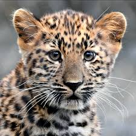
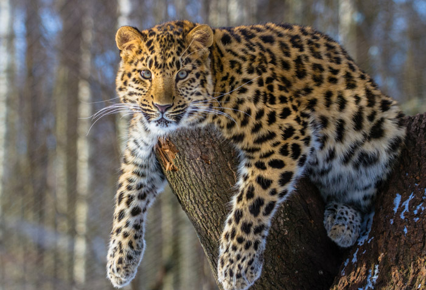
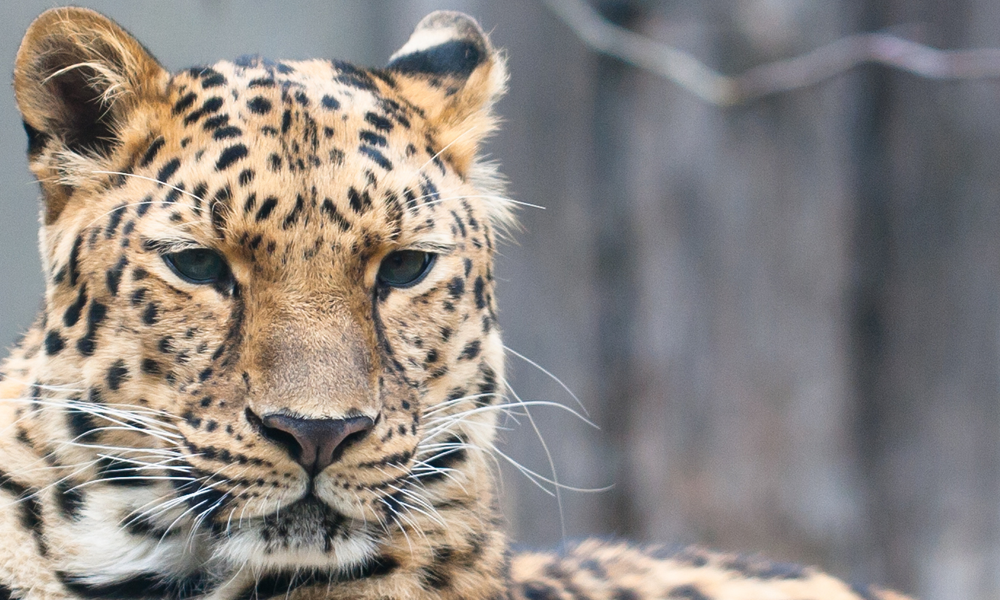
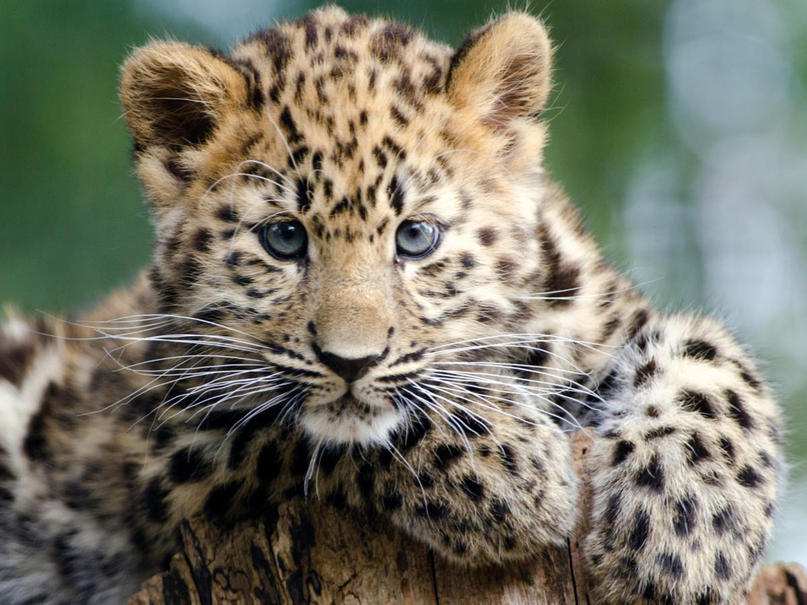
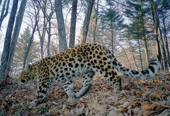
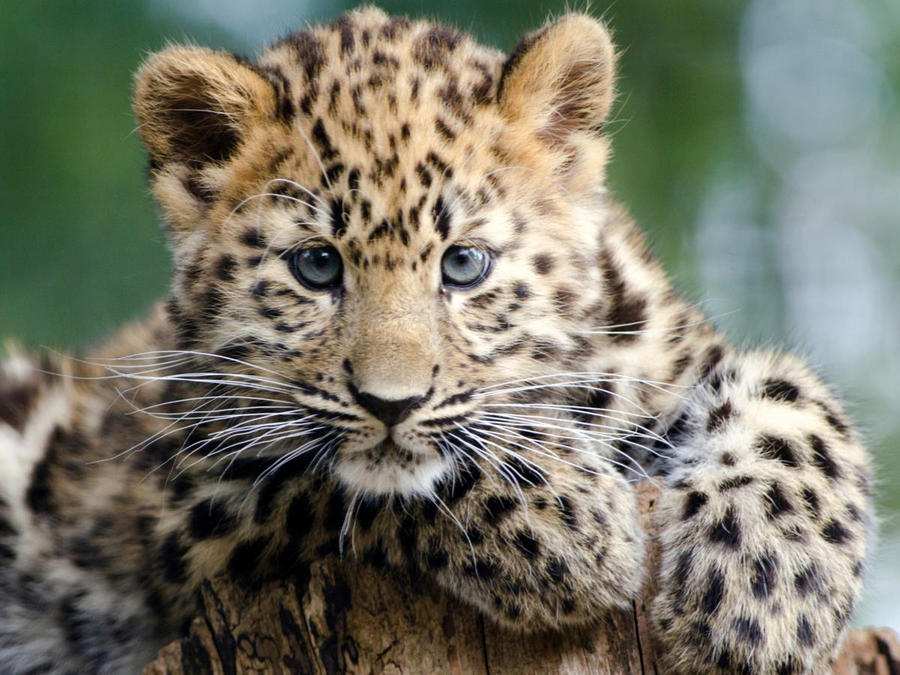
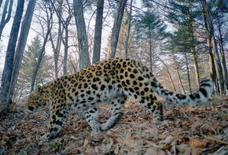

Basic Information
The Amur leopard lives in Russia, China, and possibly North Korea. They get their names for the Amur river, which flows into the sea at the eastern end of Russia. Amur leopards are slightly smaller than other types of leopards but have longer legs than the other leopards. Males weigh around 32-48 kg, and females weigh around 25-43 kg. Males are about 107-136 cm long and their tails are 82-90 cm long.
Why They Are Endangered
Right now in the wild there are only around 70 Amur leopards left. There are more of them living in zoos then there are living in the wild. They are endangered because of how much they are being poached. They are being poached because of their beautiful, spotted fur. Their fur can be sold at $500 all the way up to $1000. Agriculture and villages surround the forests where the leopards live, causing the forests to be relatively accessible, making poaching a problem.
  
 



How They Are Trying To Stop Them From Being Endangered
WWF supports antipoaching work in all Amur leopard habitats in the Far East of Russia and in northeast China. WWF implements programs to stop the illegal trade in Amur leopard parts. They also help governments enforce domestic and international trade restrictions on Amur leopard products. WWF monitors the population and habitat of the Amur leopard. To protect the habitat and population of the Amur leopard they have to increase areas of protected land in both Russia and China, reducing illegal and unsustainable logging practices, and facilitating trade between companies committed to responsible forestry practices. WWF has also worked to successfully lobby the Russian government reroute a planned oil pipeline that would have endangered the Amur leopard.